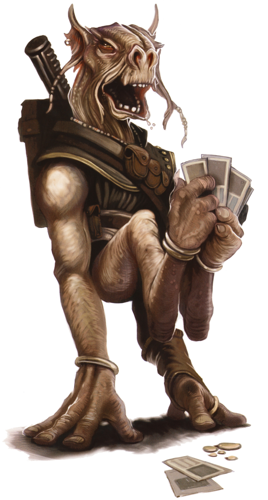

Dug
dug
Special Abilities: Dugs begin the game with one rank in Brawl. They still may not train Brawl above rank 2 during character creation.
Born to Ride: Whether it be atop dangerous beasts or screaming repulsorcraft, Dugs are particularly adept riders. They begin the game with one rank of the Defensive Driving talent.
On many worlds across the galaxy, Dugs have a reputation as mean-spirited brutes with an outsized inferiority complex. While this stereotype is not particularly fair, it has proven difficult for the Dugs to shake, in large part because of their ongoing conflicts with the Gran colonists on their homeworld of Malastare.
Despite their short stature, most Dugs are quite strong, as is apparent from their muscular arms and legs. Dug culture has a decidedly stubborn and militaristic bent, and many Dugs believe that the potential greatness of theirs species repressed by the Republic, then the Empire, and most especially by the Grans.
Centuries ago, during the ancient days of the Republic, the Grans moved to colonize Malastare as they I expanded across the galaxy. Unsur- | prisingly, the Dugs fought violently against the efforts of the Grans to colonize their world. Though the Grans’ technology exceeded that of the Dugs, the Dugs proved resourceful and unrelenting in the defense of their home, and the Grans were unprepared for the ferocity of the Dugs. The war grew increasingly brutal, and its escalation eventually led to an intervention by the Republic.
Unfortunately, due to the sway the Gran colonists held with the Republic, it effectively awarded the planet to them during mediation. The Republic relocated most of the Dugs to the western continent, while the Grans held the eastern continent. As a result of their defeat and the injustice they faced, many Dugs grew extremely xenophobic, and few held any love for the Republic. There have been no major reparations by the wider galactic community and no progress on helping to restore Dug independence in any meaningful sense, and so Dug frustrations with outsiders haven’t significantly lessened in the intervening centuries.
The most militant Dugs believe not only in their right to a sovereign planet, but also in the superiority of their own species. Their losses over the years have ingrained a great sense of hostility toward the rest of the galaxy in these hard-liners, and even inspire resentment and anger at other Dugs who are more willing to compromise in the name of results. Most Dugs are not so fanatical, of course, but the fact that the planet remains troubled by external and internecine conflicts alike does not help to resolve the situation.
During the Clone Wars, tensions rose again on Malastare between the belligerent factions. Unsurprisingly, Gran representatives held the Malastare seat in the Republic Senate, and during those troubling times, they strongly supported the Chancellor in his rise to power. In the days since the Emperor’s ascension, the Gran occupiers’ past loyalty has largely been ignored, and the Empire has installed a series of human governors to rule Malastare. Many Dugs were initially amused by how Imperial authorities humiliated and demoted the Grans in ways resembling the treatment that the Dugs had received for centuries. However, years of harsh Imperial rule have worn away any real love for the Empire most Dugs might have held. Dugs are still treated as the lesser citizens of their homeworld. Despite this, most Dugs living on Malastare grudgingly prefer the Empire’s iron-fisted reign to rule by their Gran occupiers, whom they see as the more despicable of the two. Imperial brutality is less effective against the Dugs, who meet it with their own ferocity in turn.
Reputation is of the utmost importance to traditionalist Dug families, and many clans claim a lineage from ancient, heroic figures from Dug history to prop up their position in Dug society. Some of these claims are true, though many are not, and refer to mythical figures whose existence cannot be verified. Even those hereditary claims that began as truth have usually been expanded, distorted, and exaggerated over the years as the clans have jockeyed for the esteem granted by stories of powerful ancestors.
Dugs are technologically adept, but often have to adapt the technology of other species to make it useful to their unique physiology. In turn, Dug devices and weapons are generally rather difficult for members of other species to use.
Dugs are one-meter-tall humanoids with long upper limbs serving as legs, and with lower limbs that hang from their torso operate as their arms and hands. The genders are very similar in appearance, though males have loose, inflatable, neck-flaps reserved for mating rituals and calls. Dugs have long snouts that most species subconsciously read as expressing a permanent snarl. This perception likely plays into—and also helps to fuel—the Dugs’ galactic reputation for confrontational and mean-spirited interaction.
Long skin flaps at the ends of their snouts and ears are often adorned with beads or jewelry. Due to their dexterous feet, adapted to grasping branches and trunks in their native forest habitat, Dugs do not generally wear footwear. When they do, it tends to be similar to gloves to allow them to maintain the use of their digits when moving. Malastare’s high gravity makes the Dugs especially strong and quick when they are on worlds with gravity at or lower than the galactic average.
Dugs are highly independent, and many hate to rely on anyone but themselves. Individuals must fend for themselves within their culture, which can often be very violent. Centuries of repression by the Gran settlers on Malastare have only intensified this belief in harsh self-sufficiency that many Dugs hold. Few aliens treat the Dugs with much respect, and so most Dugs respond in kind. Their natural us-against-the-galaxy attitude leads to constant conflicts. Despite their individualism, Dugs do band together around their clans, joining together against other families and various foes such as the Empire and the Grans.
Many Dugs would love nothing more than to expel the Gran interlopers and all the other off-worlders from Malastare, but the reality of the situation is that they lack the power to take back their planet. This leaves Dug society riven by conflict, both against the various groups of invaders and from within as disparate clans violently differ over the possible methods for addressing their shared problems. The growth and advancement of Dug technology has been severely limited and stunted by the meddling of off-worlders, and so the Dug voices seeking compromise rather than retribution are usually drowned out by the most quarrelsome elements of society.
Dug towns and other geopolitical regions are typically ruled by a powerful Dug king, queen, or other titled individual who wins a position through prearranged combat. After the passing of a leader, the candidates battle to incapacitation or death. These are brutal contests with few rules, and most of those are inevitably broken or manipulated as needed by the fighters. While there are Dugs who hold themselves to strict codes of honor, as within most species, such individuals tend to find themselves outmaneuvered by more morally “flexible” opponents.
The Dugs are native to the world of Malastare, but when the Old Republic Senate passed the so-called Gran Protectorate Act, it enabled the Gran colonists to take over the eastern continent and forced most of the Dugs to the western continent. To this day, the Dugs still struggle to protect their lands and keep the Gran at bay. They remain tree-dwellers, with elaborate and chaotic treetop settlements or clusters of formidable towers. This gives them a great advantage in the forests over their foes. Enemies find it difficult to navigate pathways made for travelers with four prehensile limbs. Dug cities rarely equal those of the Grans in terms of technological power, however.
The Dugs are largely self-sufficient. They are technologically savvy despite the fact they must import a significant percentage of their technology and vehicles. This reality has allowed a certain amount of trade to occur between certain Dug settlements and Grans, while other Dugs prefer to deal with traders from off-world rather than the Grans. While Dug mannerisms and negotiation tactics often seem explosive and erratic to off-worlders, those traders who learn to parley with the Dugs on their own terms (and even better, in their own language) can often make substantial profits for their efforts.
Dugs have their own language and prefer to deal in it whenever possible. Some do this out of a desire to preserve their culture despite the Gran and Imperial colonizers living on Malastare; others do it out of stubborn refusal to change. Dugs can learn Basic, but few on Malastare do. Off-world, however, almost all Dugs learn Basic. They might also acquire some Huttese or a local language if it makes it easier to live or work in a given area or deal with their employer. Many spacers joke that Dugs always seem to gain an impressive grasp of the use of profanity in any language they know, though xenologists tend to dismiss this as a baseless stereotype.
Dugs leave Malastare for all sorts of reasons. Some seek to make their fortune, while others hope for glory on far-off racetracks or even in battles amid the stars. Unfortunately, the Dug reputation for brutality and ill-temperedness tends to land them in rough company when they seek employment off-world. Though many Dugs do overcome these stereotypes, the challenges they pose are not insubstantial. Even though many fringers know better than to judge individuals by the stories of their species passed around in cantinas and space docks, others are not so open-minded.
Many Dugs seek out professions where they can put their strength and agility to work for them. They might become involved in Podracing, swoop racing, and any other pursuit that involves both fast vehicles and thrills. While they can make do with controls built for other species, Dugs quickly adapt any craft they own to their atypical arrangement of arms and legs. Some make a good living in illegal races and gambling. Others work in repair shops, using their acquired know-how to soup up other beings’ ships, while still more work as smugglers, soaring across the spacelanes at incredible speeds.
The Dug love of speed is born out in the centuries-old tradition of Podracing, which stems from an even older history of riding the beasts of Malastare. Though the ludicrously fast-paced, underhanded, and often deadly sport is now illegal in the Empire, the Dugs have few qualms about racing anyway. Still, the ban has greatly hurt the Dugs’ economy. They cannot draw the massive crowds of old, so they make do with smaller, low-key venues, honing their skills for larger, off-world races in the hope that legal racing will someday return.